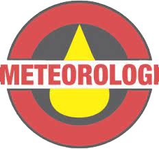

Sekolah Tinggi Meteorologi Klimatologi dan Geofisika
Sekolah Tinggi Meteorologi Klimatologi dan Geofisika (STMKG) adalah Perguruan Tinggi Kedinasan di lingkungan Badan Meteorologi, Klimatologi, dan Geofisika (BMKG), yang mempersiapkan kader tenaga ahli tingkat madya, guna mendukung tugas Badan Meteorologi, Klimatologi, dan Geofisika sebagai lembaga acuan utama di Indonesia dalam memberikan informasi meteorologi, klimatologi, geofisika, dan kualitas udara, yang secara teknis akademik, pembinaannya dilakukan oleh Menteri Pendidikan Nasional dan secara teknis operasional dilakukan oleh Kepala Badan Meteorologi, Klimatologi, dan Geofisika.
Sejarah
STMKG didirikan di Bandung pada tahun 1955 dengan nama Akademi Meterologi dan Geofisika (AMG). Kampusnya berada di Institut Teknologi Bandung (ITB). Pada tahun 1960, AMG dipindahkan ke Jakarta; kampusnya berada di Kantor Lembaga Meteorologi dan Geofisika (LMG) Jl. Arief Rakhman Hakim No. 3 Jakarta Pusat. Tahun 1960 – 1978 AMG berstatus di bawah Pusat Meteorologi dan Geofisika.
Pada tahun 1978, AMG berubah nama menjadi Balai Pendidikan dan Latihan Meteorologi dan Geofisika (BPLMG) dengan status berada di bawah Badan Diklat Departemen Perhubungan (KM. 55/OT/PHB-1978 31 Maret 1978).
Sejak tahun 2000, BPLMG berubah kembali menjadi AMG di bawah Badan Diklat Departemen Perhubungan (SK. Menhub No. KM 82 Thn 1999 Tgl 13-10-1999), dan kampusnya pindah dan berlokasi di jalan Perhubungan 1, Pondok Betung, Pondok Aren, Tangerang Selatan, Banten. Hingga tahun 2004 AMG tetap di bawah Badan Diklat dengan SK Menhub No. 72 Thn 2002 Tgl 2-10-2002.
Terhitung mulai 1 Januari 2005 AMG berada di bawah Badan Meteorologi dan Geofisika (BMG) sebagai Lembaga Pemerintah Non Departemen (LPND), berdasarkan SK KBMG No. 003 Tahun 2004.
Program Studi

Meteorologi
Meteorologi atau ilmu cuaca adalah cabang dari ilmu atmosfer yang mencakup kimia atmosfer dan fisika atmosfer, dengan fokus utama berada pada ilmu prakiraan cuaca.
Klimatologi
Klimatologi atau ilmu iklim adalah studi mengenai iklim, secara ilmiah didefinisikan sebagai kondisi cuaca yang dirata-ratakan selama periode waktu yang panjang.
Geofisika
Geofisika adalah bagian dari ilmu bumi yang mempelajari bumi menggunakan kaidah atau prinsip-prinsip fisika.
Instrumentasi-MKG
Instrumentasi-MKG adalah suatu peminatan yang mempelajari peralatan dan kalibrasi peralatan khusus di bidang meteorologi,klimatologi,dan geofisika